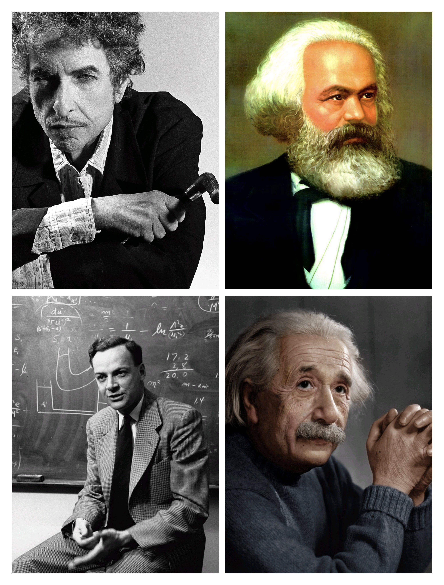

犹太人口分布

艺术与娱乐
杰出的犹太人
科学与技术
- 阿尔伯特·爱因斯坦（Albert Einstein）：相对论创始人之一。
- 理查德·费曼（Richard Feynman）：量子电动力学奠基人。
- 约翰·冯·诺伊曼（John von Neumann）：现代计算机体系结构的奠基人。
文学与哲学
- 弗兰茨·卡夫卡（Franz Kafka）：存在主义与荒诞文学的代表。
- 巴鲁赫·斯宾诺莎（Baruch Spinoza）：现代哲学的奠基者之一。
- 卡尔·马克思（Karl Marx）：共产主义理论的创始人之一。